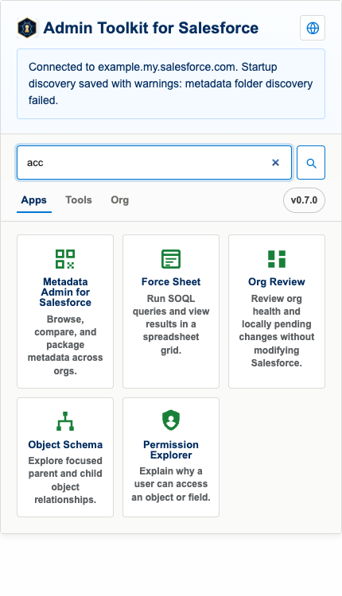
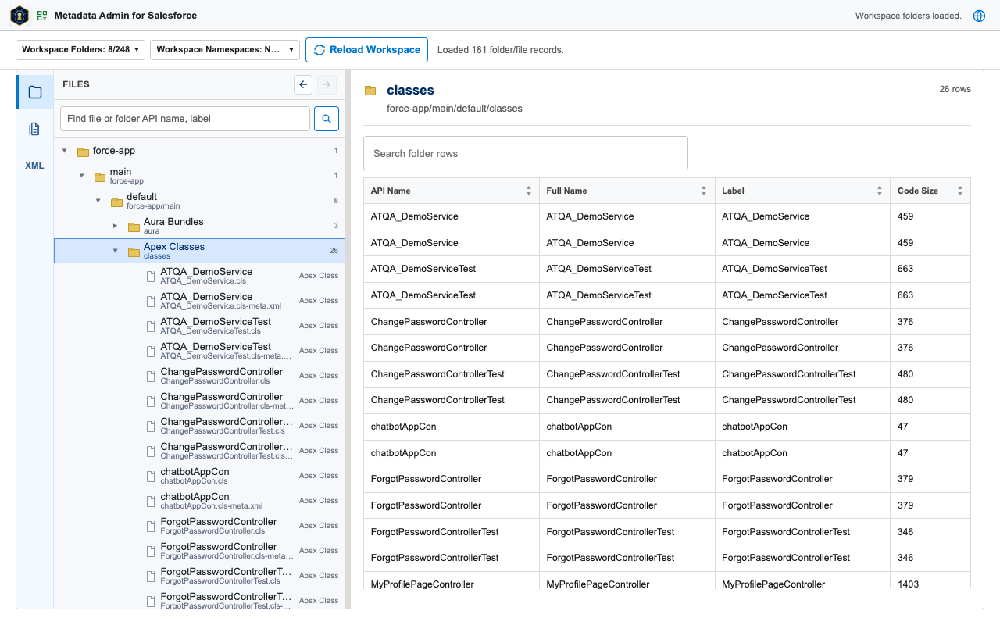
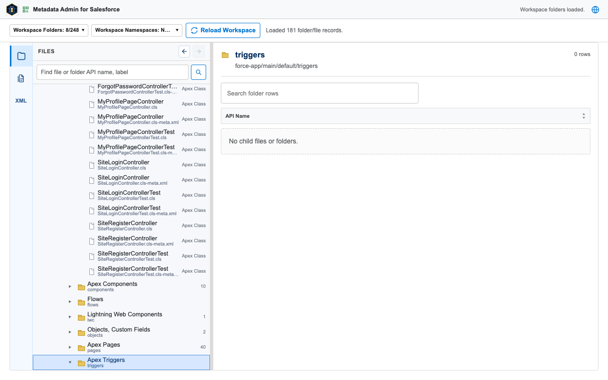
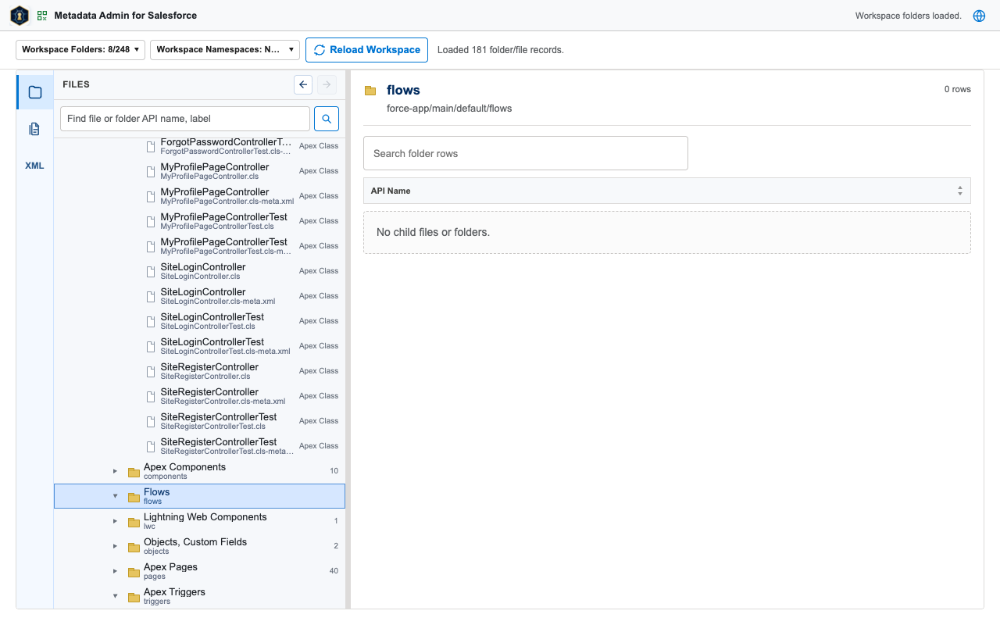
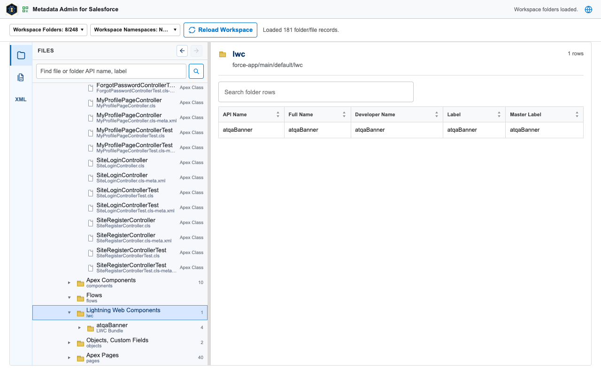
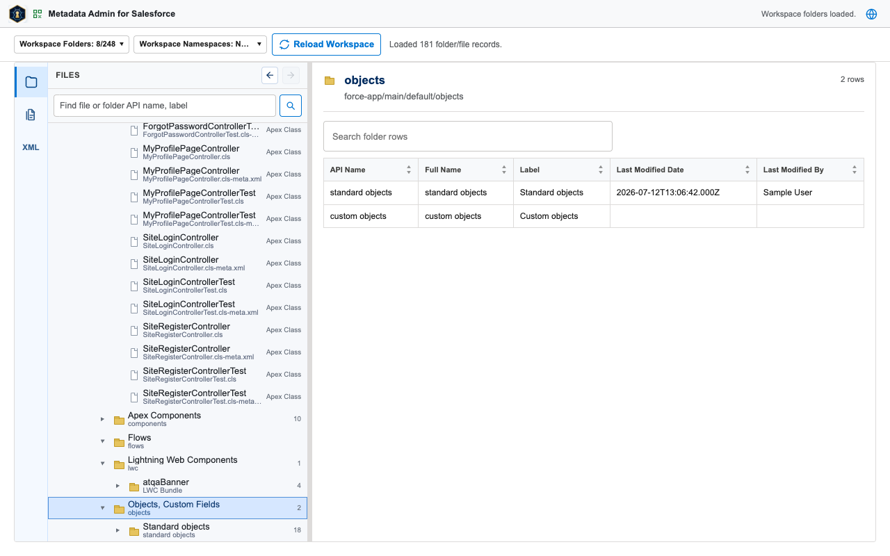
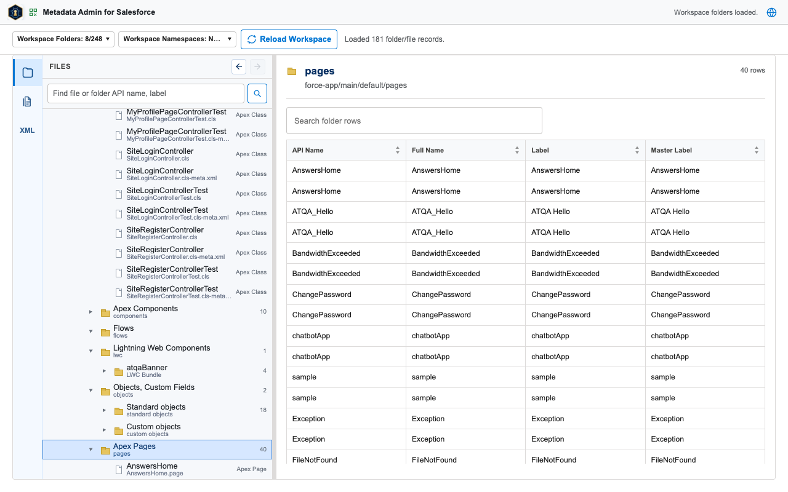
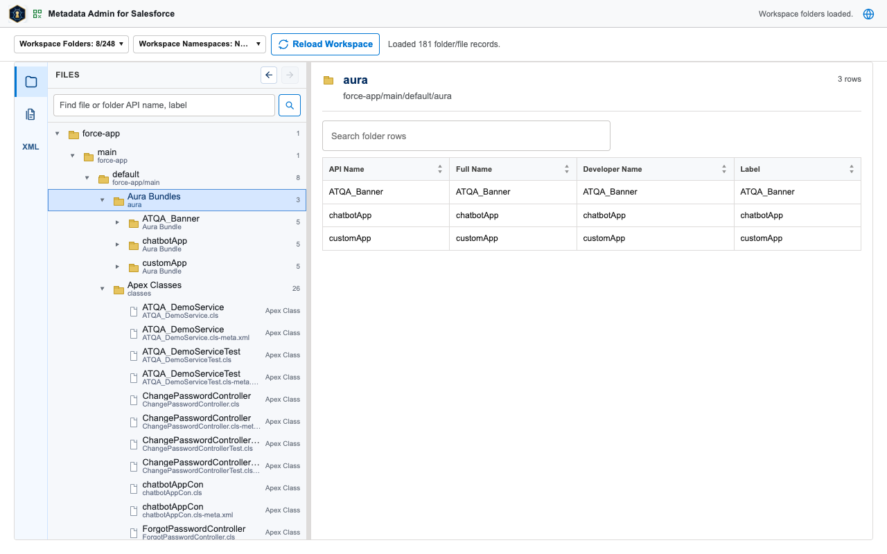
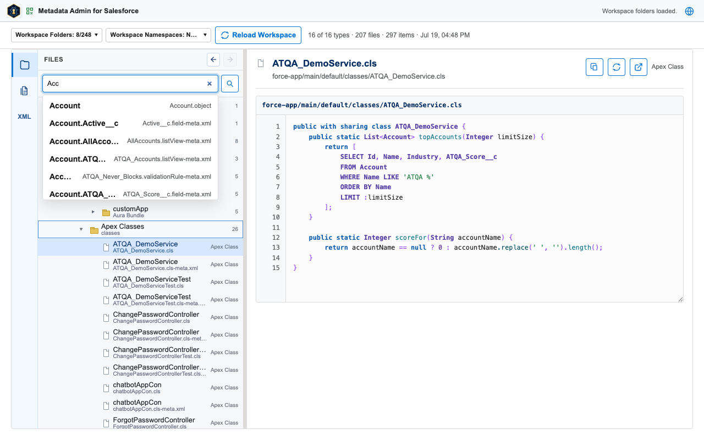
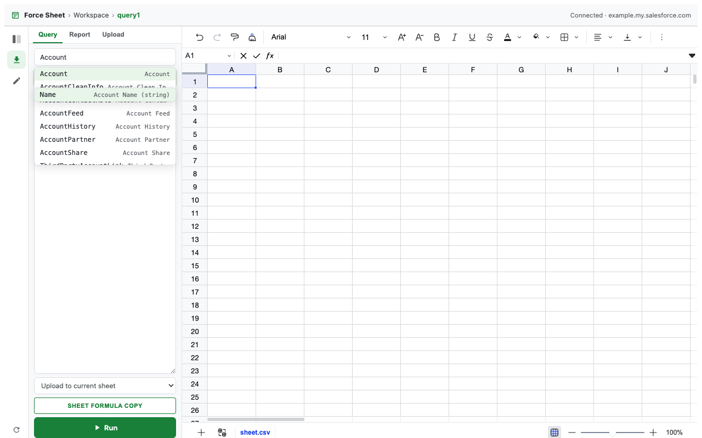

Contents
1. Getting started & popup
Install the toolkit, then open the popup from any Salesforce tab — it reuses the session you are already signed in with.
- Install Admin Toolkit for Salesforce from the Chrome Web Store.
- Open any Salesforce tab and sign in as usual — no separate login.
- Click the extension icon to open the popup.



2. Metadata Admin for Salesforce
Browse the org's metadata in a source-style tree, inspect folders and files, search the loaded workspace, track local edits, and build package.xml selections.














3. SheetD
A multi-tab spreadsheet for Salesforce data: browse objects and reports, run SOQL, inspect file details, edit supported object records, and review exact changed fields before a confirmed update or delete.




4. Permission Explorer
Trace effective object and field access to the assigned profile, permission sets, and permission set groups that grant it, or compare two users across the returned access metadata.
5. GitHub Metadata Sync
Configure and preflight governed metadata retrieval to an approved repository through an org-side bridge, Salesforce native credentials, and a branch-and-pull-request-only workflow.
6. Org Review
A read-only assessment of org health that runs automatically when opened. Each section carries evidence and remediation guidance; the report exports as PDF, Markdown, summary JSON, or evidence JSON.


7. Object Schema
Build an interactive relationship map for any pickable object, then explore every field of every selectable object in the Fields spreadsheet below it.


8. Document Folders
Browse Salesforce libraries and folders, preview supported files, and download selections as a ZIP that preserves folder paths. Folder selection is recursive; downloads are limited to 500 files and 250 MB and can be canceled mid-run.


9. REST Explorer
Compose Salesforce REST API requests with endpoint templates, send them against the connected org, and inspect the JSON response. Requests run only when you send them.


10. Data Export
Run SOQL, SOSL, and GraphQL queries or report exports, preview the result as a CSV grid or JSON, and download it.


11. Run Apex
Execute anonymous Apex and review the compile result, execution status, and debug output.

12. Limits & monitoring
Read-only monitoring pages for the org: API limits with live usage bars, the setup audit trail, login history, and event log files.


13. Built-in manual (EN/JP)
The extension ships with its own manual in English and Japanese, including per-version release notes. Every page has a language toggle in its header.


14. Release notes
Recent releases. No release has added new Chrome permissions, host permissions, remote code, telemetry, ads, or third-party data services. The full per-version history ships inside the extension's built-in manual.
0.8.0 (2026-07-31)
- Added GitHub Metadata Sync with an org-bound setup draft, Salesforce native Named Credential definitions and OAuth, governed preflight, and branch-and-pull-request-only delivery.
- Rebuilt SheetD on the DinaSheet engine so objects and reports open directly as editable data and exact pending field changes are reviewed before update.
- Added report workbook fallback for results beyond Salesforce's report API row limit.
0.7.0 (2026-07-18)
- Added Permission Explorer for tracing effective object and field access to profiles, permission sets, and permission set groups.
0.6.2 (2026-07-15)
- Document Folders: folder selection is recursive and atomic across lazily loaded subtrees, with folder-preserving ZIP paths for duplicate document occurrences.
- Document Folders: added 500-file and 250 MB ZIP limits, cancelable downloads, and one-time fetching of shared document content.
- Object Schema: rebuilt the fields experience as a spreadsheet with native header filters, global search highlights, CSV export, and full screen; Packaged Objects defaults to none and is remembered per org.
- Object Schema became a popup Apps-only page; the compact 40px app-session header now also applies to Metadata Admin and Org Review.
0.6.1 (2026-07-14)
- Rebuilt Document Folders downloads around tree checkbox selection with a Selected Items panel.
- Added Object Schema to the popup Apps tab with suggestions, packaged-namespace controls, map search, zoom, and layouts.
- Removed Org Review from the tools-page navigation.
- Added THIRD-PARTY-NOTICES.txt for the bundled spreadsheet engine.
0.6.0 (2026-07-11)
- Added the read-only Org Review covering health, limits, setup changes, and login failures.
- Added a per-org read-only lock and consistent risk confirmation for Apex, data mutation, and metadata deployment.
- Fixed SheetD workspace files sharing the last active grid; values and formulas now stay isolated per file and org.